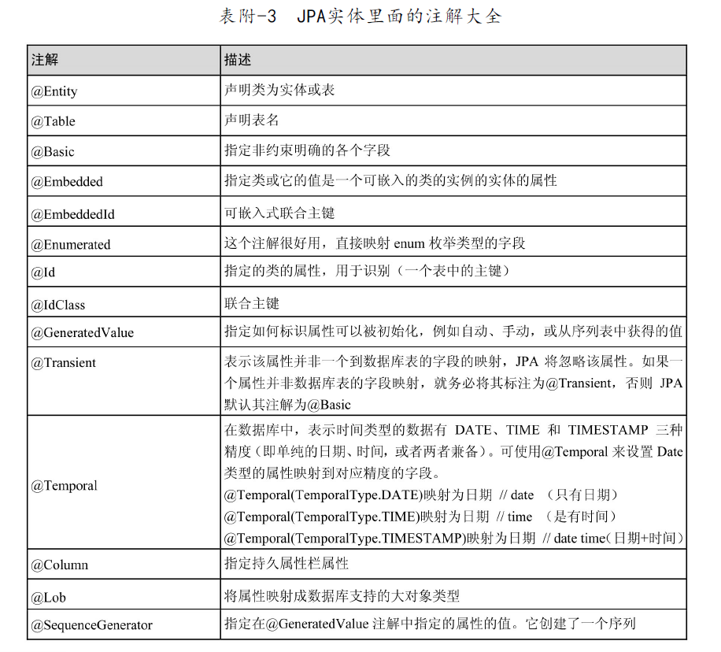
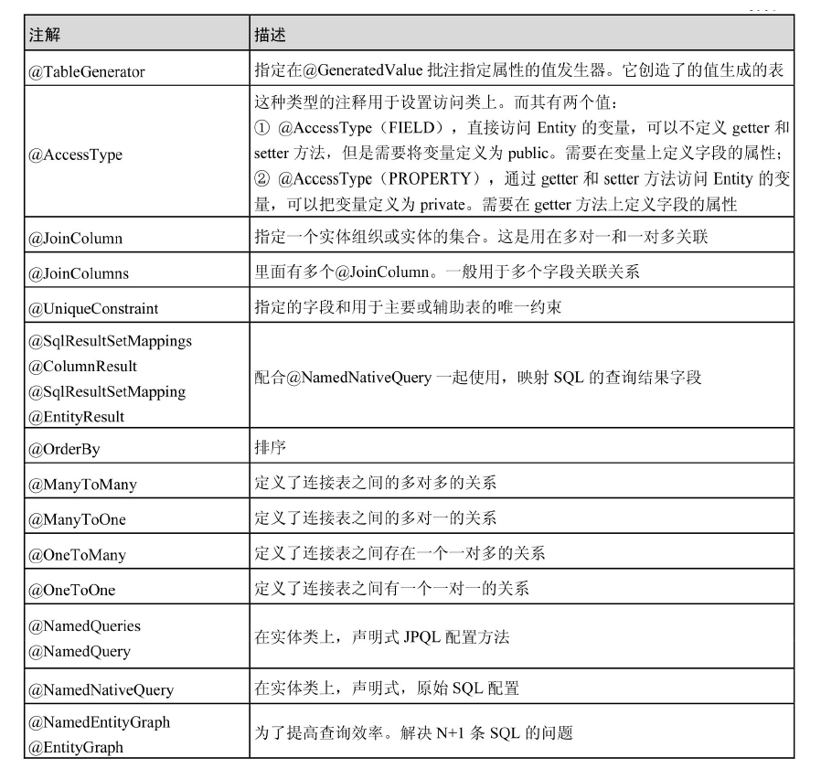
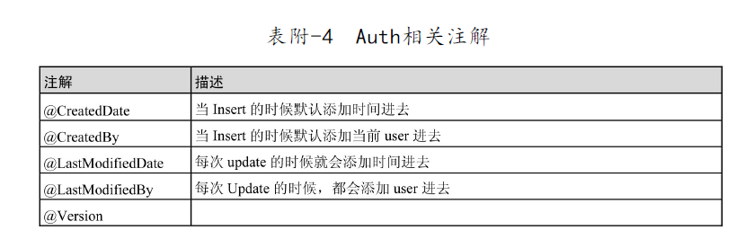
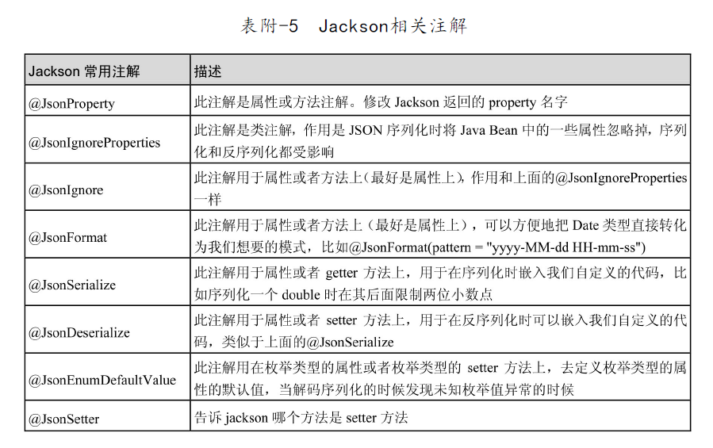
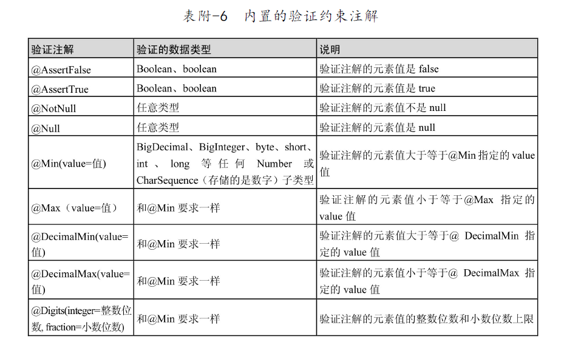
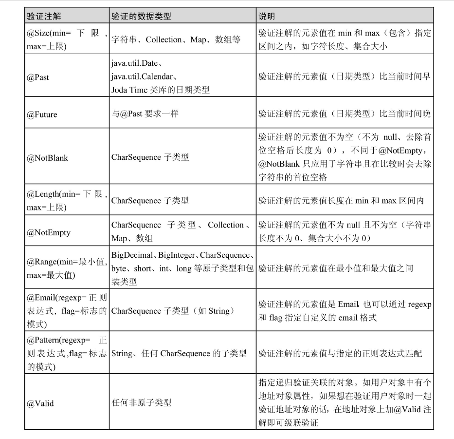
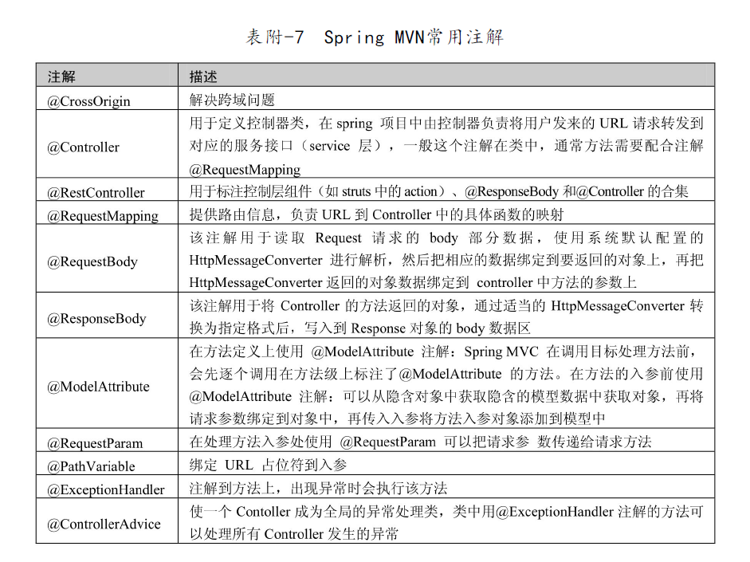
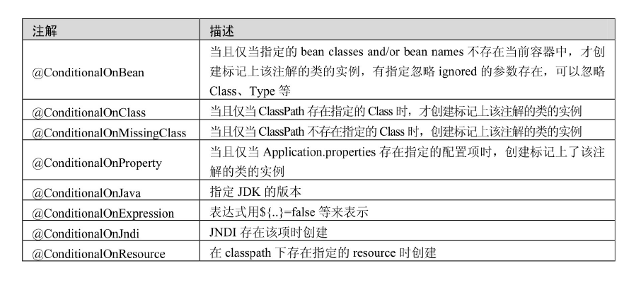

原文连接:https://www.cnblogs.com/coder2017/p/11690051.html
参考资源列表
- 官方文档：https://docs.spring.io/spring-data/jpa/docs/2.1.5.RELEASE/reference/html/
- 《Spring Data JPA入门到精通》
前言
JPA是Java Persistence API的简称，是Spring在Hibernate的基础上进行的二次封装框架，为了更好更方便的融入Spring大家庭，同时也提供了一些Hibernate没有的特性，与其他ORM框架一起构成SpringData，统一封装了ORM层，使开发人员使用起来更加方便快捷。
备注：本文所有代码都是基于SpringBoot 2.1.5版本
JPA的使用
基本单表操作的使用
对于操作单表来说，jpa提供了非常方便使用的封装，我们只需要按规范编写Repository接口同时继承JpaRepository就可以享用jpa基本功能了。代码如下：
User实体:
package com.yizhu.entity;
import lombok.Builder;
import lombok.Data;
import lombok.ToString;
import javax.persistence.*;
import java.io.Serializable;
import java.util.List;
import java.util.Set;
@Entity
@Table(name = "t_user")
@Data
@Builder
public class User implements Serializable {
private static final long serialVersionUID = 1L;
@Id
@GeneratedValue(strategy = GenerationType.IDENTITY)
private Long id;
private String name;
private String password;
private Integer age;
private Integer sex;
}
repository接口：
package com.yizhu.repository;
import com.yizhu.entity.User;
public interface UserRepository extends JpaRepository<User, Long>{
}下面看看jpa为我们提供了哪些默认操作单表数据的方法
package org.springframework.data.jpa.repository;
@NoRepositoryBean
public interface JpaRepository<T, ID> extends PagingAndSortingRepository<T, ID>, QueryByExampleExecutor<T> {
List<T> findAll(); // 查询全表数据
List<T> findAll(Sort var1); // 查询全表数据，支持排序
List<T> findAllById(Iterable<ID> var1); // 根据id字段查询所有匹配数据
<S extends T> List<S> saveAll(Iterable<S> var1); // 批量保存或更新数据
void flush(); // 刷新本地缓存到数据库
<S extends T> S saveAndFlush(S var1); // 保存或更新单挑数据及刷新本地缓存到数据库
void deleteInBatch(Iterable<T> var1); // 批量删除数据
void deleteAllInBatch(); // 批量删除全表数据
T getOne(ID var1); // 根据id查询一条匹配数据
<S extends T> List<S> findAll(Example<S> ar1); // Example方式的查询指定实体
<S extends T> List<S> findAll(Example<S> var1, Sort var2); // Example方式的查询指定实体并排序
}package org.springframework.data.repository;
@NoRepositoryBean
public interface PagingAndSortingRepository<T, ID> extends CrudRepository<T, ID> {
Iterable<T> findAll(Sort var1); // 根据排序查询全表，返回类型是任意集合
Page<T> findAll(Pageable var1); // 根据分页参数分页查询
}package org.springframework.data.repository;
@NoRepositoryBean
public interface CrudRepository<T, ID> extends Repository<T, ID> {
<S extends T> S save(S var1); // 保存或更新单条数据
<S extends T> Iterable<S> saveAll(Iterable<S> var1); // 批量保存或更新
Optional<T> findById(ID var1); // 根据id查询数据，返回类型是Optional
boolean existsById(ID var1); // 根据id判断数据是否存在
Iterable<T> findAll(); // 查询全表数据，返回类型为集合
Iterable<T> findAllById(Iterable<ID> var1); // 根据id集合查询数据
long count(); // 统计全表数据量
void deleteById(ID var1); // 根据id删除数据
void delete(T var1); // 删除单条数据
void deleteAll(Iterable<? extends T> var1); // 删除指定集合数据
void deleteAll(); // 删除全表数据
}package org.springframework.data.repository.query;
public interface QueryByExampleExecutor<T> {
<S extends T> Optional<S> findOne(Example<S> var1); // 根据Example查询一条
<S extends T> Iterable<S> findAll(Example<S> var1); // 根据Example查询所有数据
<S extends T> Iterable<S> findAll(Example<S> var1, Sort var2); // 根据Example查询所有数据，并排序
<S extends T> Page<S> findAll(Example<S> var1, Pageable var2); // 根据Example分页查询
<S extends T> long count(Example<S> var1); // 根据Example统计
<S extends T> boolean exists(Example<S> var1); // 根据Example判断数据是否存在
}除此之外，jpa提供了一套新的生成sql的机制，非常方便好用，jpa根据Repository接口的方法中的关键字、实体字段及出入参，自动生成sql，这种方式启动容器的时候就可以检查语法是否正确，简单使用例子如下：
package com.yizhu.repository;
import com.yizhu .entity.User;
import org.springframework.data.jpa.repository.EntityGraph;
import org.springframework.data.jpa.repository.JpaRepository;
import org.springframework.data.jpa.repository.JpaSpecificationExecutor;
import org.springframework.data.jpa.repository.Query;
import org.springframework.data.repository.query.Param;
import java.util.List;
public interface UserRepository extends JpaRepository<User, Long>{
/**
* 根据年龄查询用户信息
* @param age
* @return
*/
List<User> findAllByAge(Integer age);
/**
* 根据用户性别和所属组织名称查询用户信息
* @param userSex
* @param orgName
* @return
*/
List<User> findBySexAndOrg(@Param("sex") Integer sex, @Param("name") String name);
/**
* 根据用户名模糊查询
* @return
*/
List<User> findAllByNameLike(@Param("name") String name);
}除了find 、By、And之外，还有一些关键词，全部定义在PartTree、Part类，组装起来可以生成各种各样的sql，下面截取部分代码，感兴趣的同学可以打开源码去阅读
package org.springframework.data.repository.query.parser;
public class PartTree implements Streamable<PartTree.OrPart> {
private static final String KEYWORD_TEMPLATE = "(%s)(?=(\\p{Lu}|\\P{InBASIC_LATIN}))";
private static final String QUERY_PATTERN = "find|read|get|query|stream";
private static final String COUNT_PATTERN = "count";
private static final String EXISTS_PATTERN = "exists";
private static final String DELETE_PATTERN = "delete|remove";
private static final Pattern PREFIX_TEMPLATE = Pattern.compile("^(find|read|get|query|stream|count|exists|delete|remove)((\\p{Lu}.*?))??By");
private final PartTree.Subject subject;
private final PartTree.Predicate predicate;
...
private static String[] split(String text, String keyword) {
Pattern pattern = Pattern.compile(String.format("(%s)(?=(\\p{Lu}|\\P{InBASIC_LATIN}))", keyword));
return pattern.split(text);
}
private static class Predicate implements Streamable<PartTree.OrPart> {
private static final Pattern ALL_IGNORE_CASE = Pattern.compile("AllIgnor(ing|e)Case");
private static final String ORDER_BY = "OrderBy";
private final List<PartTree.OrPart> nodes;
private final OrderBySource orderBySource;
private boolean alwaysIgnoreCase;
public Predicate(String predicate, Class<?> domainClass) {
String[] parts = PartTree.split(this.detectAndSetAllIgnoreCase(predicate), "OrderBy");
if (parts.length > 2) {
throw new IllegalArgumentException("OrderBy must not be used more than once in a method name!");
} else {
this.nodes = (List)Arrays.stream(PartTree.split(parts[0], "Or")).filter(StringUtils::hasText).map((part) -> {
return new PartTree.OrPart(part, domainClass, this.alwaysIgnoreCase);
}).collect(Collectors.toList());
this.orderBySource = parts.length == 2 ? new OrderBySource(parts[1], Optional.of(domainClass)) : OrderBySource.EMPTY;
}
}
...
}
private static class Subject {
private static final String DISTINCT = "Distinct";
private static final Pattern COUNT_BY_TEMPLATE = Pattern.compile("^count(\\p{Lu}.*?)??By");
private static final Pattern EXISTS_BY_TEMPLATE = Pattern.compile("^(exists)(\\p{Lu}.*?)??By");
private static final Pattern DELETE_BY_TEMPLATE = Pattern.compile("^(delete|remove)(\\p{Lu}.*?)??By");
private static final String LIMITING_QUERY_PATTERN = "(First|Top)(\\d*)?";
private static final Pattern LIMITED_QUERY_TEMPLATE = Pattern.compile("^(find|read|get|query|stream)(Distinct)?(First|Top)(\\d*)?(\\p{Lu}.*?)??By");
private final boolean distinct;
private final boolean count;
private final boolean exists;
private final boolean delete;
private final Optional<Integer> maxResults;
public Subject(Optional<String> subject) {
this.distinct = (Boolean)subject.map((it) -> {
return it.contains("Distinct");
}).orElse(false);
this.count = this.matches(subject, COUNT_BY_TEMPLATE);
this.exists = this.matches(subject, EXISTS_BY_TEMPLATE);
this.delete = this.matches(subject, DELETE_BY_TEMPLATE);
this.maxResults = this.returnMaxResultsIfFirstKSubjectOrNull(subject);
}
private Optional<Integer> returnMaxResultsIfFirstKSubjectOrNull(Optional<String> subject) {
return subject.map((it) -> {
Matcher grp = LIMITED_QUERY_TEMPLATE.matcher(it);
return !grp.find() ? null : StringUtils.hasText(grp.group(4)) ? Integer.valueOf(grp.group(4)) : 1;
});
}
...
private boolean matches(Optional<String> subject, Pattern pattern) {
return (Boolean)subject.map((it) -> {
return pattern.matcher(it).find();
}).orElse(false);
}
}
}package org.springframework.data.repository.query.parser;
public class Part {
private static final Pattern IGNORE_CASE = Pattern.compile("Ignor(ing|e)Case");
private final PropertyPath propertyPath;
private final Part.Type type;
private Part.IgnoreCaseType ignoreCase;
...
public static enum Type {
BETWEEN(2, new String[]{"IsBetween", "Between"}),
IS_NOT_NULL(0, new String[]{"IsNotNull", "NotNull"}),
IS_NULL(0, new String[]{"IsNull", "Null"}),
LESS_THAN(new String[]{"IsLessThan", "LessThan"}),
LESS_THAN_EQUAL(new String[]{"IsLessThanEqual", "LessThanEqual"}),
GREATER_THAN(new String[]{"IsGreaterThan", "GreaterThan"}),
GREATER_THAN_EQUAL(new String[]{"IsGreaterThanEqual", "GreaterThanEqual"}),
BEFORE(new String[]{"IsBefore", "Before"}),
AFTER(new String[]{"IsAfter", "After"}),
NOT_LIKE(new String[]{"IsNotLike", "NotLike"}),
LIKE(new String[]{"IsLike", "Like"}),
STARTING_WITH(new String[]{"IsStartingWith", "StartingWith", "StartsWith"}),
ENDING_WITH(new String[]{"IsEndingWith", "EndingWith", "EndsWith"}),
IS_NOT_EMPTY(0, new String[]{"IsNotEmpty", "NotEmpty"}),
IS_EMPTY(0, new String[]{"IsEmpty", "Empty"}),
NOT_CONTAINING(new String[]{"IsNotContaining", "NotContaining", "NotContains"}),
CONTAINING(new String[]{"IsContaining", "Containing", "Contains"}),
NOT_IN(new String[]{"IsNotIn", "NotIn"}),
IN(new String[]{"IsIn", "In"}),
NEAR(new String[]{"IsNear", "Near"}),
WITHIN(new String[]{"IsWithin", "Within"}),
REGEX(new String[]{"MatchesRegex", "Matches", "Regex"}),
EXISTS(0, new String[]{"Exists"}),
TRUE(0, new String[]{"IsTrue", "True"}),
FALSE(0, new String[]{"IsFalse", "False"}),
NEGATING_SIMPLE_PROPERTY(new String[]{"IsNot", "Not"}),
SIMPLE_PROPERTY(new String[]{"Is", "Equals"});
private static final List<Part.Type> ALL = Arrays.asList(IS_NOT_NULL, IS_NULL, BETWEEN, LESS_THAN, LESS_THAN_EQUAL, GREATER_THAN, GREATER_THAN_EQUAL, BEFORE, AFTER, NOT_LIKE, LIKE, STARTING_WITH, ENDING_WITH, IS_NOT_EMPTY, IS_EMPTY, NOT_CONTAINING, CONTAINING, NOT_IN, IN, NEAR, WITHIN, REGEX, EXISTS, TRUE, FALSE, NEGATING_SIMPLE_PROPERTY, SIMPLE_PROPERTY);
public static final Collection<String> ALL_KEYWORDS;
private final List<String> keywords;
private final int numberOfArguments;
...
static {
List<String> allKeywords = new ArrayList();
Iterator var1 = ALL.iterator();
while(var1.hasNext()) {
Part.Type type = (Part.Type)var1.next();
allKeywords.addAll(type.keywords);
}
ALL_KEYWORDS = Collections.unmodifiableList(allKeywords);
}
}
}可以看到单表操作的大部分需求jpa都为我们提供了现成的实现，但也支持我们使用@Query注解自定义查询sql，方便有sql基础的同学使用，sql可控性强。
package com.yizhu.repository;
import com.yizhu .entity.User;
import org.springframework.data.jpa.repository.EntityGraph;
import org.springframework.data.jpa.repository.JpaRepository;
import org.springframework.data.jpa.repository.JpaSpecificationExecutor;
import org.springframework.data.jpa.repository.Query;
import org.springframework.data.repository.query.Param;
import java.util.List;
public interface UserRepository extends JpaRepository<User, Long>{
/**
* 查询所有用户信息
* @return
*/
@Query(value = "from User u")
List<User> findAll();
/**
* 根据年龄查询用户信息
* @param age
* @return
*/
@Query(value = "select * from t_user u where u.user_age = ?1", nativeQuery = true)
List<User> findAllByAge(Integer age);
/**
* 根据用户性别和所属组织名称查询用户信息
* @param userSex
* @param orgName
* @return
*/
@Query(value = "select u from User u left join u.org o where u.userSex = :userSex and o.orgName = :orgName")
List<User> findUsersBySexAndOrg(@Param("userSex") Integer userSex, @Param("orgName") String orgName);
}多表关联
@OneToOne、@OneToMany、@ManyToOne、@ManyToMany
@Entity
@Table(name = "t_user")
@NamedEntityGraph(name = "User.findUsers", attributeNodes = {@NamedAttributeNode("jobs"), @NamedAttributeNode("roles")})
@Data
@Builder
@NoArgsConstructor
@AllArgsConstructor
public class User implements Serializable {
private static final long serialVersionUID = 1L;
@ApiModelProperty(hidden = true)
@Id
@GeneratedValue(strategy = GenerationType.IDENTITY)
private Long id;
@ApiModelProperty(value = "用户名")
@Column(name = "user_name")
private String name;
@ApiModelProperty(value = "用户密码")
@Column(name = "user_password")
private String password;
@ApiModelProperty(value = "用户年龄")
@Column(name = "user_age")
private Integer age;
@ApiModelProperty(value = "用户性别")
@Column(name = "user_sex")
private Integer sex;
@ApiModelProperty(value = "所属组织id")
@Column(name = "org_id")
private Long orgId;
@ApiModelProperty(value = "用户信息")
@OneToOne
@JoinColumn(name = "id", updatable = false, insertable = false)
private UserInfo userInfo;
@ApiModelProperty(value = "用户所属组织")
@ManyToOne
@JoinColumn(name = "org_id", updatable = false, insertable = false)
private Organization org;
@ApiModelProperty(value = "用户角色")
@OneToMany
@JoinColumn(name = "user_id", referencedColumnName = "id", insertable = false, updatable = false)
@NotFound(action = NotFoundAction.IGNORE)
private Set<Role> roles;
@ApiModelProperty(value = "用户工作")
@ManyToMany
@JoinTable(
name = "t_user_job",
joinColumns = @JoinColumn(name = "user_id", referencedColumnName = "id"),
inverseJoinColumns = @JoinColumn(name = "job_id", referencedColumnName = "id")
)
@NotFound(action = NotFoundAction.IGNORE)
private Set<Job> jobs;
private Set<Role> roles;和private Set<Job> jobs;不能用同时使用List集合代替，会报错org.hibernate.loader.MultipleBagFetchException: cannot simultaneously fetch multiple bags: [com.yizhu.entity.User.jobs, com.yizhu.entity.User.roles]
动态查询
package com.yizhu.repository;
import com.yizhu.dto.UserQueryDto;
import com.yizhu.entity.Organization;
import com.yizhu.entity.User;
import org.springframework.data.jpa.domain.Specification;
import javax.persistence.criteria.Join;
import javax.persistence.criteria.JoinType;
import javax.persistence.criteria.Predicate;
import java.util.ArrayList;
import java.util.List;
import java.util.Optional;
public class UserSpecs {
public static Specification<User> listQuerySpec(UserQueryDto userQueryDto){
return (root, query, builder) -> {
List<Predicate> predicates = new ArrayList<>();
Optional.ofNullable(userQueryDto.getId()).ifPresent(i -> predicates.add(builder.equal(root.get("id"), i)));
Optional.ofNullable(userQueryDto.getName()).ifPresent(n -> predicates.add(builder.equal(root.get("name"), n)));
Optional.ofNullable(userQueryDto.getAge()).ifPresent(a -> predicates.add(builder.equal(root.get("age"), a)));
Optional.ofNullable(userQueryDto.getOrgId()).ifPresent(oi -> predicates.add(builder.equal(root.get("orgId"), oi)));
Optional.ofNullable(userQueryDto.getOrgName()).ifPresent(on -> {
Join<User, Organization> userJoin = root.join(root.getModel().getSingularAttribute("org", Organization.class), JoinType.LEFT);
predicates.add(builder.equal(userJoin.get("orgName"), on));
});
return builder.and(predicates.toArray(new Predicate[predicates.size()]));
};
}
}package com.yizhu.service;
import com.yizhu.dto.UserQueryDto;
import com.yizhu.entity.User;
import com.yizhu.repository.UserRepository;
import com.yizhu.repository.UserSpecs;
import org.springframework.beans.factory.annotation.Autowired;
import org.springframework.stereotype.Service;
import java.util.List;
@Service
public class UserService {
@Autowired
private UserRepository userRepository;
public List<User> findUsersDynamic(UserQueryDto userQueryDto){
return userRepository.findAll(UserSpecs.listQuerySpec(userQueryDto));
}
}审计功能使用
在启动类添加@EnableJpaAuditing注解表示开启jpa审计功能
package com.yizhu;
import org.springframework.boot.SpringApplication;
import org.springframework.boot.autoconfigure.SpringBootApplication;
import org.springframework.data.jpa.repository.config.EnableJpaAuditing;
@EnableJpaAuditing
@SpringBootApplication
public class DemoApplication {
public static void main(String[] args) {
SpringApplication.run(DemoApplication.class, args);
}
}在需要使用审计功能的实体类添加@EntityListeners(AuditingEntityListener.class)注解
package com.yizhu.entity;
import lombok.Builder;
import lombok.Data;
import org.springframework.data.jpa.domain.support.AuditingEntityListener;
import javax.persistence.*;
import java.io.Serializable;
import java.util.Date;
@Entity
@Table(name = "t_role")
@Data
@Builder
@EntityListeners(AuditingEntityListener.class)
public class Role implements Serializable {
private static final long serialVersionUID=1L;
@ApiModelProperty(hidden = true)
@Id
@GeneratedValue(strategy = GenerationType.AUTO)
private Long id;
private String roleName;
@CreatedDate
private Date createTime;
@CreatedBy
private Long createId;
@LastModifiedDate
private Date updateTime;
@LastModifiedBy
private Long updateId;
}实现AuditorAware接口，告诉容器当前登录人id
package com.yizhu.configuration;
import org.springframework.data.domain.AuditorAware;
import org.springframework.web.context.request.RequestContextHolder;
import org.springframework.web.context.request.ServletRequestAttributes;
import java.util.Optional;
public class UserAuditorAwareImpl implements AuditorAware<Long> {
@Override
public Optional<Long> getCurrentAuditor() {
// 从session中获取登录人id
ServletRequestAttributes servletRequestAttributes = (ServletRequestAttributes) RequestContextHolder.getRequestAttributes();
Long userId = (Long)servletRequestAttributes.getRequest().getSession().getAttribute("userId");
return Optional.of(userId);
}
}ok，然后jpa就会根据ID和Version判断当前操作是更新还是新增数据，新增时会注入当前登录人id到标有@CreateBy注解的字段上，当前时间注入到标有@CreateTime注解字段上；更新时则注入到@LastModifiedBy和@LastModifiedDate对应的字段上。想详细了解的可查看org.springframework.data.jpa.domain.support.AuditingEntityListener源码。
常见的坑
- N+1问题，当使用
@ManyToMany、@ManyToOne、@OneToMany、@OneToOne关联
关系的时候，FetchType怎么配置LAZY或者EAGER。SQL真正执行的时
候是由一条主表查询和N条子表查询组成的。这种查询效率一般比较
低下，比如子对象有N个就会执行N+1条SQL。使用JPA 2.1推出来的@EntityGraph、@NamedEntityGraph可以解决该问题。如下。
@ApiModel
@Entity
@Table(name = "t_user")
@NamedEntityGraph(name = "User.findUsers", attributeNodes = {@NamedAttributeNode("jobs"), @NamedAttributeNode("roles")})
@Data
@Builder
@NoArgsConstructor
@AllArgsConstructor
public class User implements Serializable {
private static final long serialVersionUID = 1L;
@ApiModelProperty(hidden = true)
@Id
@GeneratedValue(strategy = GenerationType.IDENTITY)
private Long id;
// 省略其他属性
}package com.yizhu.repository;
import com.yizhu.entity.User;
import org.springframework.data.jpa.repository.EntityGraph;
import org.springframework.data.jpa.repository.JpaRepository;
import org.springframework.data.jpa.repository.JpaSpecificationExecutor;
import org.springframework.data.jpa.repository.Query;
import org.springframework.data.repository.query.Param;
import java.util.List;
public interface UserRepository extends JpaRepository<User, Long>, JpaSpecificationExecutor<User> {
/**
* 根据id查询用户信息
* @param id
* @return
*/
@EntityGraph(value = "User.findUsers", type = EntityGraph.EntityGraphType.FETCH)
User findAllById(Long id);
/**
* 根据name查询用户信息
* @param name
* @return
*/
@EntityGraph(value = "User.findUsers", type = EntityGraph.EntityGraphType.FETCH)
@Query(value = "select * from t_user where user_name = :name", nativeQuery = true)
List<User> findAllByUserName(@Param("name") String name);
}- 所有的注解要么全配置在字段上，要么全配置在get方法上，不能混用，混用就会启动不起来，但是语法配置没有问题。
- 所有的关联都是支持单向关联和双向关联的，视具体业务场景而定。JSON序列化的时候使用双向注解会产生死循环，需要人为手动转化一次，或者使用@JsonIgnore。
- 在所有的关联查询中，表一般是不需要建立外键索引的。@mappedBy的使用需要注意。
- 级联删除比较危险，建议考虑清楚，或者完全掌握。
- 不同的关联关系的配置，@JoinClumn里面的name、referencedColumnName代表的意思是不一样的，很容易弄混，可以根据打印出来的SQL做调整。
- 当配置这些关联关系的时候建议大家直接在表上面，把外键建好，然后通过后面我们介绍的开发工具直接生成，这样可以减少自己调试的时间。
JPA常用注解
摘自《Spring Data JPA从入门到精通》








